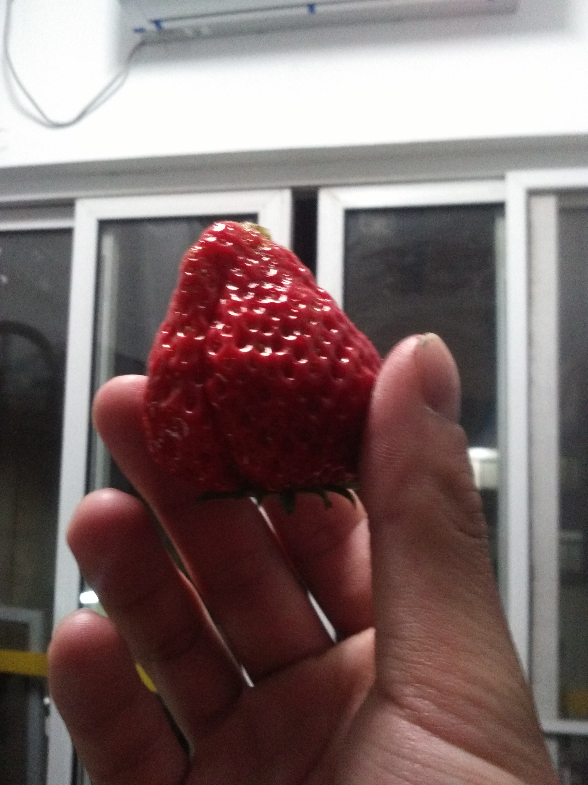
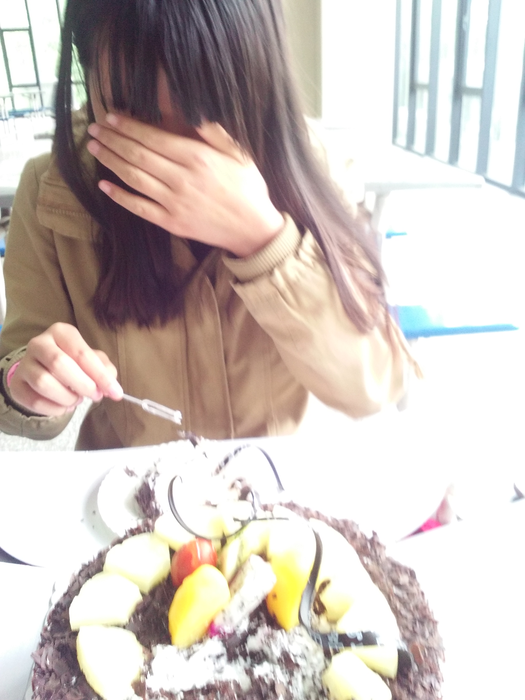
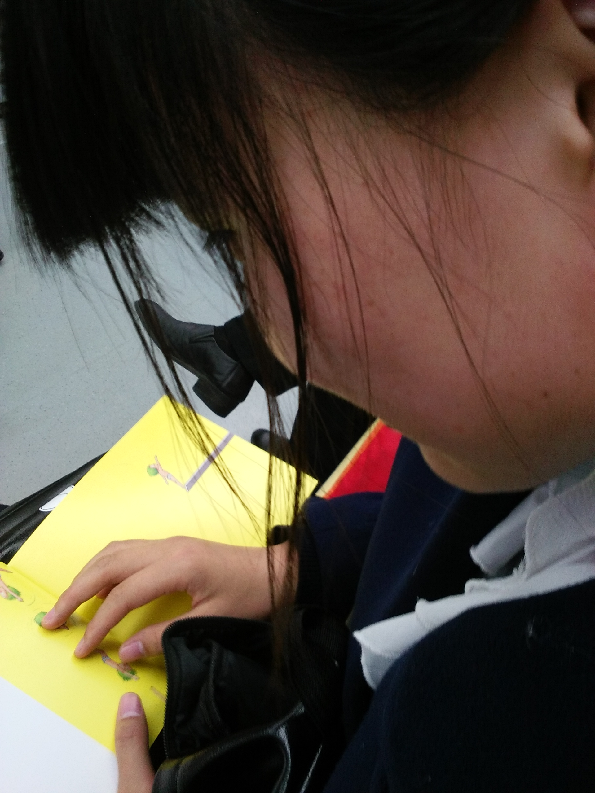
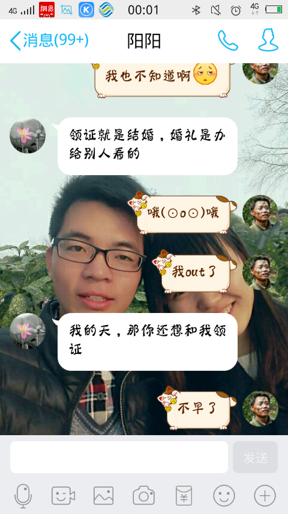
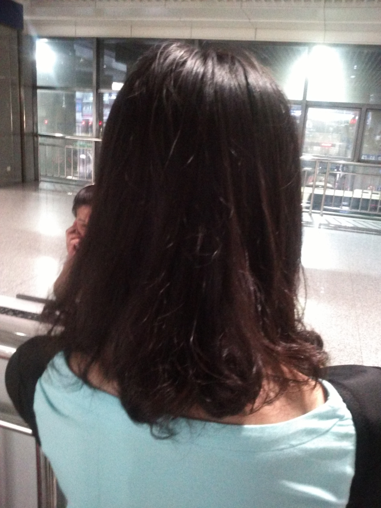
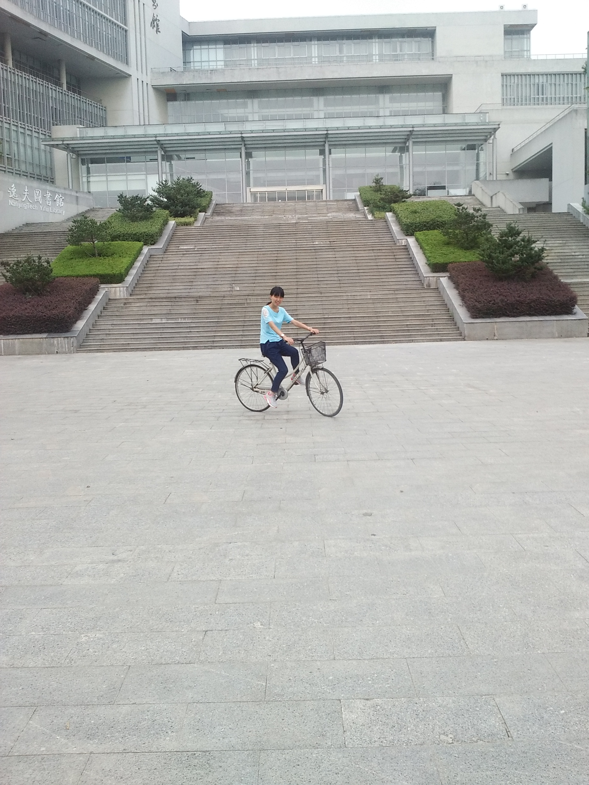
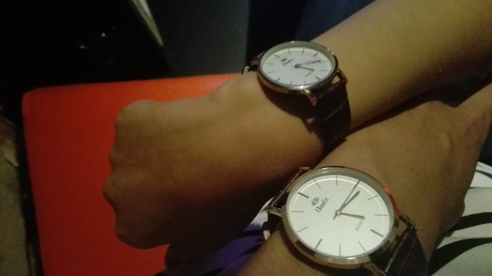

MyGirl
美吗？
MyGirl
很美，我爱的女孩就是她！
YY and HG
玄武湖见证我们第一次合影
YY and HG
这时的天很蓝，云很白，景很美
YY and HG
第一次吃到了你为我摘的草莓
YY and HG
很甜，很美
YY and HG
第一次为我过生日，很开心
YY and HG
地铁上，你在看书，我在看你
YY and HG
我们幼稚吗？
YY and HG
NO!
YY and HG
第一次送你回家,有一点紧张
YY and HG
数学不好，你骑车在图书馆门口绕了一个无穷大
YY and HG
摇摆，一起摇摆。
YY and HG
滴答滴答，就像我们的爱，从不会穷尽
你若不离我便不弃
良好的心态，踏实的努力，还有坚强的后盾，一直相信鼓励自己的人，感觉一切皆有可能啦。❤